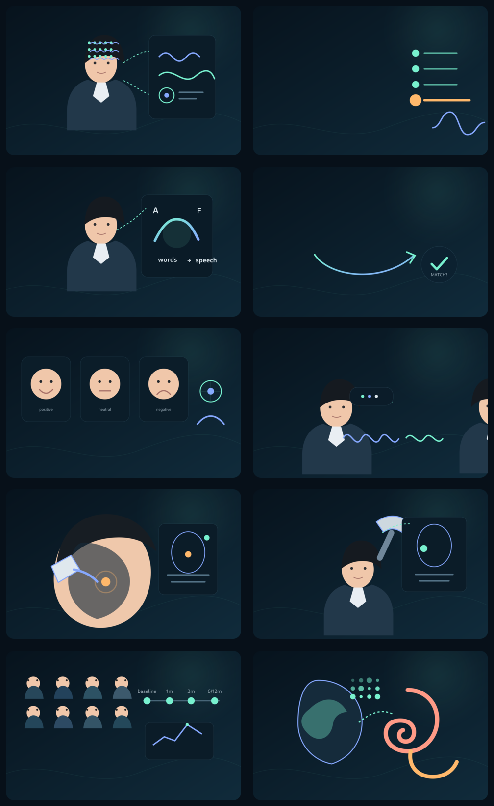

Learning from people, not only variables
Participant-facing clinical research built a practical understanding of symptoms, cognition, adherence, follow-up and the texture of real-world data.
I study how clinically meaningful states emerge across brain, behavior, physiology, and lived interaction — and how those signals can guide personalized intervention and real-world monitoring.

My path did not begin with a tool. It began with patients — and gradually moved toward measuring mechanisms with greater precision.
Participant-facing clinical research built a practical understanding of symptoms, cognition, adherence, follow-up and the texture of real-world data.
Prospective work in alcohol use disorder connected baseline cognition and mood to later drinking outcomes across multiple follow-up windows.
fMRI, individualized TMS and neuronavigated TUS expanded the question from clinical association toward mechanism and intervention.
Concurrent EEG–fNIRS, physiology, behavior and naturalistic interaction form a synchronized view of state transitions in adolescent depression.
Controlled cognitive-affective probes and naturalistic clinical interaction are recorded in one synchronized session, then translated toward real-world state estimation.

A shared visual language connects controlled tasks, naturalistic interaction, longitudinal follow-up and targeted neuromodulation. Each scene represents a different way of perturbing, observing or following a clinically meaningful state.
Selected work spanning prospective cohorts, neuroimaging, neuromodulation and multi-scale biological measurement.
LONGITUDINAL CLINICAL RESEARCH
Prospective clinical phenotyping linking baseline symptoms and cognitive function to later drinking outcomes across repeated follow-up.
NEUROIMAGING · NEUROMODULATION
Resting-state fMRI, individualized targeting, cognitive paradigms, repeated symptom monitoring and longitudinal workflows.
TARGETED NEUROMODULATION
Brainsight-guided bilateral GPi localization, stimulation workflow, cognitive testing, parameter logging and safety monitoring.
MULTI-SCALE TRANSLATION
Clinical phenotyping alongside SCFAs, 16S rRNA, permeability and inflammation measures, and translational laboratory workflows.
CURRENT MULTIMODAL SYSTEM
Concurrent neurophysiology across rest, cognitive-affective tasks and semi-structured interaction, designed for synchronized state analysis.
Multimodal work is most useful when every signal answers part of the same clinical hypothesis.
Recruitment, assessment, structured phenotyping, participant coordination and longitudinal retention.
EEG, fNIRS, ECG/PPG, GSR, eye tracking, behavioral signals and multimodal synchronization.
Resting-state fMRI workflows, quality control, individualized target localization and task design.
TMS, TUS, neuronavigation, parameter logging, cognitive testing and safety monitoring.
MMN, verbal fluency, N-back, emotion processing and semi-structured interaction.
Longitudinal statistics, mixed-effects thinking, brain–behavior coupling and predictive validation.
SCFAs, 16S rRNA, permeability and inflammatory measures in translational gut–brain research.
Synchronized acquisition, marker design, data quality, reproducible workflows and interdisciplinary coordination.
I want to take responsibility for the full life cycle of a clinically meaningful scientific question.
I began in research as an implementer—recruiting and assessing participants, collecting data, and learning directly from patients within studies designed by others. Over time, I moved closer to the full research process: identifying questions, designing experiments, building acquisition environments, standardizing protocols, coordinating collaborators, training research staff, anticipating operational risks, and planning the preprocessing and analysis of multimodal data.
Leading a study from its initial question to an operational research system showed me both how much I have learned and how much deeper I want to go. The questions I now care about require more than completing a cross-sectional experiment; they require rigorous methodological development, longitudinal follow-up, and several years of sustained scientific work. I want to pursue a PhD to develop the independence and depth needed to take responsibility for that entire arc—from a clinically meaningful question to reproducible evidence and, ultimately, useful knowledge.
My goal is not simply to participate in research, but to grow into a researcher capable of defining and sustaining an original program of inquiry—and to contribute, in a focused and honest way, to clinical neuroscience.
I am seeking PhD environments where mechanistic neuroscience, clinically meaningful data and computational modeling are treated as one problem rather than separate disciplines.